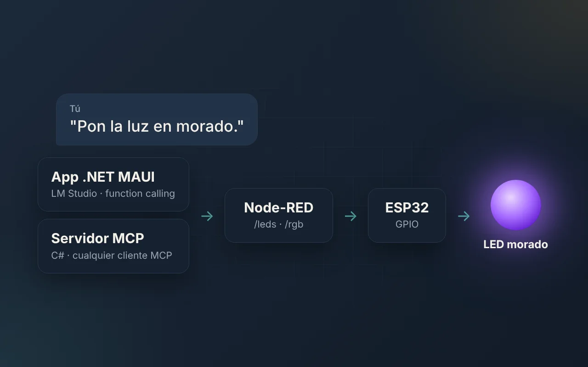
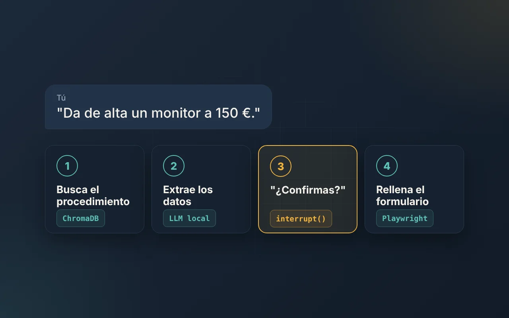
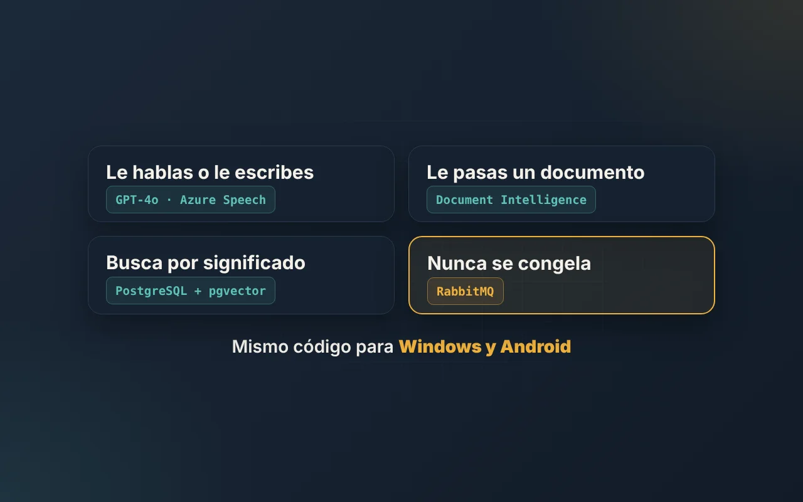

Webs y tiendas online
Webs rápidas y pensadas para posicionar desde el primer día.
- WordPress y WooCommerce
- Productos a medida y configuradores de precio
- SEO técnico y local
- React y Node.js cuando hace falta algo propio
Soy David Paredes, desarrollador full stack en Cartagena. Construyo webs, tiendas online y automatizaciones con IA (Claude, n8n, Python) para empresas que quieren dejar de perder horas en tareas repetitivas.

Antes de escribir una línea de código, entiendo cómo trabajas. La herramienta es lo de menos.
Webs rápidas y pensadas para posicionar desde el primer día.
Flujos que conectan tus herramientas y hacen solos lo repetitivo.
Asistentes que responden con tu información y actúan con tu permiso.
Un trabajo para cliente y varios proyectos propios, con el código abierto en GitHub.
Imprenta de gran formato en Madrid: vinilos, lonas, roll-ups… todo a medida. El reto era que el cliente pudiera comprar sin pedir presupuesto.
Un configurador calcula el precio por m² según las medidas, el cliente elige material y acabado, sube su archivo y lo añade al carrito. 58 productos organizados por lo que el cliente busca, no por su nombre técnico, y pensados para SEO desde el primer día.

Le pides "pon la luz en morado" y un ESP32 la enciende. Una app .NET MAUI con modelo local y un servidor MCP en C# mandan las órdenes a Node-RED, con planes B si el modelo falla.

"Da de alta un monitor a 150 €" y el agente busca el procedimiento, extrae los datos, pide confirmación y rellena el formulario con Playwright.

Asistente de facturación: le hablas o le pasas un documento y extrae los datos. Lo pesado va a una cola para que la app nunca se congele. Windows y Android.
Asistente autogestionado: modelo en local, memoria por usuario, notas de voz, análisis de imágenes y un briefing de noticias cada mañana. Todo orquestado con n8n.
Más en GitHub: pipeline ETL de libros · app RAG con AnythingLLM · todos los repos →
Qué haces, cuántas veces y quién lo hace. Si no merece la pena automatizarlo, te lo digo.
Qué se construye, con qué herramienta y por qué. Sin tecnicismos innecesarios.
Avances frecuentes para que veas cómo queda y ajustemos sobre la marcha.
Todo explicado para que lo entienda quien lo vaya a usar, y con alertas si algo falla.
Soy desarrollador web full stack y me especializo en automatizar procesos con inteligencia artificial.
Hoy trabajo en IoT FENSTER, construyendo el ecosistema digital de una empresa que integra IoT en ventanas y persianas: web, plataforma para partners, herramientas internas y automatizaciones con IA. En paralelo, hago proyectos freelance.
Me formé en el CIFP Carlos III de Cartagena: Desarrollo de Aplicaciones Web y el Curso de Especialización en Inteligencia Artificial y Big Data.
Web y plataforma para partners, herramientas internas, automatizaciones con IA y documentación técnica.
Webs, tiendas online y automatizaciones para negocios.
Soporte técnico y sistemas en Cartagena.
CFGS en Desarrollo de Aplicaciones Web y Curso de Especialización en IA y Big Data.
Cuéntamela y te digo si tiene sentido automatizarla y cómo lo haría. Sin compromiso.